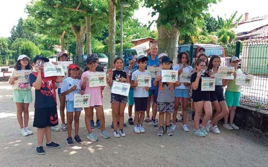
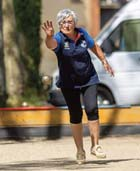
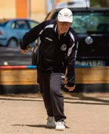
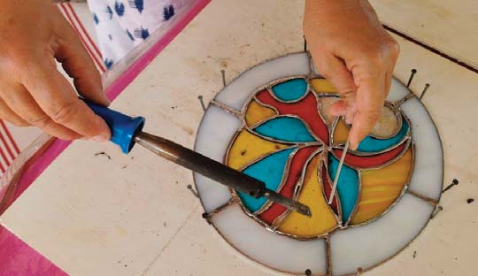

19 Avec 21 licenciés, la Boule Montpezataise conti- nue de faire rayonner notre commune sur les terrains de la région tout en cultivant son esprit convivial. Cette saison a été marquée par les titres de champions départementaux remportés par Jacques Cammas en 3e division et Michèle Mal- mont chez les féminines. Tous deux représente- ront le Tarn-et-Garonne lors du championnat régional à Muret. Michèle Malmont et Sophie Sagot se sont également quali�ées pour la phase �nale d’Occitanie avec l’équipe départe- mentale des AS. Le club poursuit également son engagement auprès des jeunes grâce à des actions de décou- verte du sport-boules dans les écoles et auprès des centres de loisirs, contri- buant ainsi à faire connaître et transmettre cette discipline. Parmi les ren- dez-vous à venir �gurent les quali�cations dé- partementales en quadrettes les 20 et 21 juin, le Marché Gourmand du 14 août et le concours vé- térans du 18 septembre. Les entraînements ont lieu le mardi de 14 h à 18 h et le dimanche de 10 h à 12 h. Toutes les per- sonnes souhaitant découvrir le sport-boules sont les bienvenues. La Boule Montpezataise remercie chaleureuse- ment ses bénévoles, licenciés, partenaires et sponsors pour leur soutien et leur engagement tout au long de l’année. La Boule Montpezataise en pleine forme C’est l’été, le temps d’un stage, dé- couvrez l’art du vitrail ! Du 6 au 10 juillet, salle Parisot, un stage vous fera découvrir le montage au plomb et la technique Tiffany. Vous repartirez avec des objets réa- lisés par vos soins. Renseignements et inscriptions : contact@rue-des-graphismes.fr, 06 72 38 18 74/07 82 80 43 72 A noter sur vos agendas de septembre ! L’événement artistique : exposition Montpez’Arts les 12 et 13 septembre salle du Faillal Peinture, luminaire, vitrail, céra- mique, photographie, bijoux ma- cramé, dessin, peinture sur porcelaine… De nombreux artistes vous présenteront leur travail. Amis artistes, il y a déjà de nombreuses inscriptions mais n’hésitez pas à nous contacter si vous souhaitez participer ! Cirque des mots, soirée ludique à la Gourmanderie de Laulau. A partir de mots tirés au sort, chacun écrit un texte. Le premier vendredi du mois à 19 h. Reprise le 4 septembre. Atelier vitrail, tous les jeudis à partir du 10 septembre, de 14 à 17 h salle Parisot. Pour tout savoir sur le montage au plomb et la technique Tiffany et réa- liser des créations personnelles. Atelier lecture à voix haute appren- dre à porter sa voix pour partager les textes que l’on aime. Le troisième sa- medi du mois, de 10 h à 12 h à la médiathèque de Montpezat. Et, pour les vo- lontaires, partici- per à la balade contée organi- sée en collabo- ration avec l’école et Mont- pezat Rando. Atelier dessin apprendre avec mé- thode pour découvrir le plaisir du dessin. Tous les mercredis de 18 h20 à 20 h30 salle de la Mairie. Séance découverte gratuite mercredi 2 sep- tembre de 18h30 à 20 h30. Pour plus d’infos et vous inscrire cecilehenras@yahoo.com ou 06 98 39 43 75. Renseignements et inscriptions : contact@rue-des-graphismes.fr, 06 72 38 18 74 / 07 82 80 43 72 Venez �âner Rue des Graphismes !